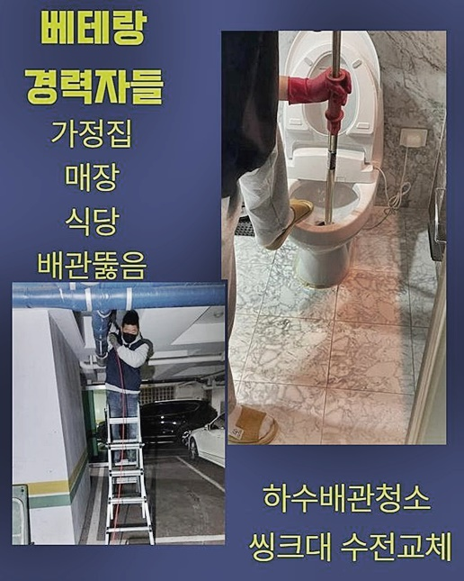
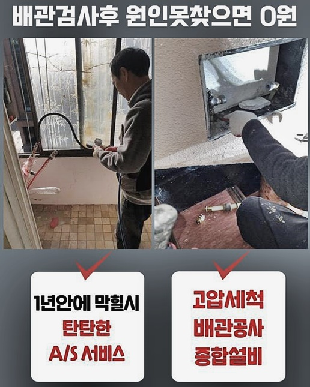
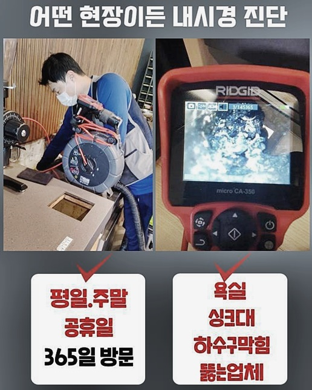
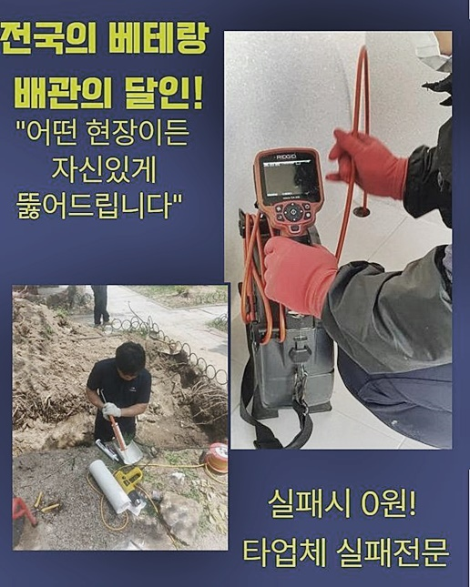
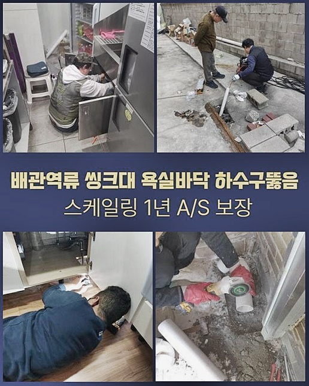
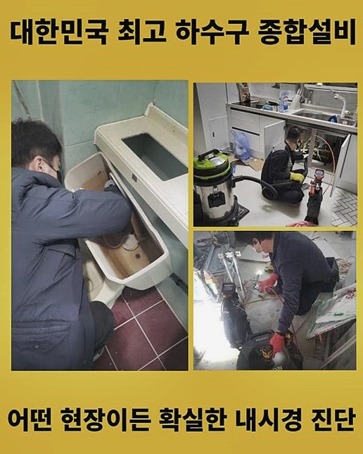
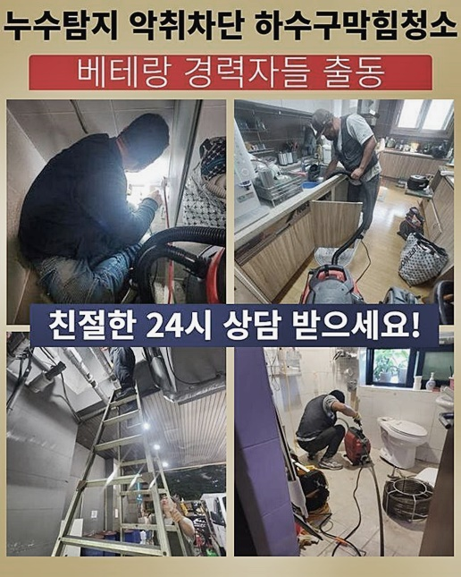

🏠 인천 가정동화장실하수구막힘 검암경서동 하수구뚫어주는곳 설비
용인시 처인구 배관막힘 전문 시공 후기

📋 작업 개요
- 위치: 용인시 처인구, 수원시 영통구, 화성시 동탄
- 서비스 유형: 배관막힘, 고압세척, 내시경점검
- 작업 일시:
- 업체명: 하수구수사대 (010-5615-2118)
🔍 문제 상황
인천 가정동화장실하수구막힘 검암경서동 하수구뚫어주는곳 설비
건물의 크기와 관계없는채로 물들을 이용하고 있을 경우 하수시스템 오류는 불현듯 발생할 확률이 있습니다
막히게되는 문제들이 발발하는 기조는 하수도 안에 쌓인 잔해를 대표적으로 꼽습니다
하수가 내려갈때나 리모델링 등을 진행할때 하수라인으로 이물들이 지속적으로 흘러가는 상태들이 나타나기에 주기적으로 관리책 실시를 알맞게 안한다면 증상들이 외부적으로 나타날거에요
배수장애가 발생될 때 배수속도들이 육안으로 보아도 저하되면서 기본적인 생활에 불편들을 겪을 수 밖에 없고 공간을 이용할때도 피해를 초래시킬 가능성들이 상당합니다
상가에 자리하여 제대로 된 장사를 하고계시는 중이면 경제측면의 손해들이 생겨나게되니 신경을 곤두세우는것이 중요하다 말씀드리고싶습니다
며칠전 저희들이 시공을 진행해준 주차장스팟의 문제들을 살피면서 배수장애는 어떻게 바로 잡아야되는게 합리적인것인지 간단히 정보를 제공하는 시간들을 마련해보았어요
배수구로 잔해가 흘러가지못하게 주시해주신다면 배수관련 문제는 어렵지않게 지체시키거나 발생시키지 않게 할 수 있어요

🔎 원인 분석
💡 전문가 진단: 정밀 진단 장비를 사용하여 슬러지의 고착 여부를 판명하고 타격/세척 작업을 실시했습니다.
그 중 고객님께서는 쓰고계신 장소의 배수구쪽 입구의 넓이등을 파악하신 뒤 파악하신 값들에 일치하는 제품의 여과망까지 설치하는것이죠
거름망제품을 준비해주면 잔해물이 투입되는 것은 대체로 예방시키는 역할로 빛을 발하고 배수장애 현상때문에 나타나게되는 불편들을 줄여나갈 수 있어요
제품의 망들을 마련하거나 주기성을 가지고 관리했으나 이런저런 문제들이 발발했을 시엔 한시라도 빨리 전문진에게 도움을 요청해 하수관 내측으로부터 침전된 오염물을 없애줘야해요
반대로 증세를 알아챘으나 심각한 불편들을 끼치지않는것 같다고 알고계시고 해결을 늦추시는 고객님이 전형적이다 판단되고 이곳도 예사로운 상황부터 솟구치는 증세를 목격한 다음 비로소 진단을 바라셨는데요
문제마다 사용되어야하는 장치가 다를수있어서 저희들은 원만한 해결을 실시하고자 저희업체가 구비해놓은 전문도구를 챙기고서 방문드립니다
도착 시 일단 증세가 불거진 공간의 점검을 수행해요
수전을 올려서 배관으로 흐르는 유속을 점검하는 절차로서 결론은 빠져나가는 유속들이 확실하게 하락했고 하수도 안에 존재하던 하수들도 솟아버리는 현상도 보게되었습니다
역류마저 동반되었을 경우 공용하수도에 잔해가 집중되어 자리할 여지가 크고 이물을 청소해주기위해선 내시경장비를 사용하여 문제들의 구간을 신속히 인지하는것이 선행되어야하겠습니다

🔧 작업 과정
내시경은 이물의 위치들을 파악할 수 있으며 배관의 특수성도 알아볼수 있기에 정확한 이물타격을 하도록 돕는 기기라고 생각하시면 됩니다
별거아닌 작업같아도 꼭 거쳐야하는 과정이기에 전문가에게 도움요청 시 내시경을 사용한 뒤 진단을 선행하는지 유무를 세심히 따져볼것을 추천드리고 싶어요
거시적인 해결을 이어가니 예상대로 이곳저곳 고착화되고 흡착된 이물질들과 슬러지가 쌓이게 된 것을 알 수 있었습니다
오랫동안 세척이 시행되지 않았기에 샤프트기기를 투입시켜 시공을 하기보단 고압수청소로 전체에 걸친 청소가 수행되어야 했죠
고압세척의 경우 일정수준 금액들이 발생되는 것은 사실이겠으나 증상들이 발생될 때마다 업체문의를 한 후 계속적으로 시공하는것보다 합리적인 수순이라 생각해도 무방합니다
배수관 사이즈와 맞아떨어지는 분사부품을 정하고 세척 시공을 진행하면 하수도를 깨끗했던 시점과 유사하게 복구시켜주는 마법을 보실 수 있으실거에요
청소를 진행시에 무조건 압력들을 행사하기보단 구간을 잘 살펴 세기를 바꿔줘야해요
배관의 경우 일정하지 않은 내구성으로 자리잡고 있어서 조심성 없이 청소를 강행한다면 훼손을 불러낼 확률이 상당해요
저희들은 이런저런 경험으로 유의할 점을 큰 어려움없이 숙지하고 있으며, 본격적인 청소를 실시이전의 선행으로 방문한 곳의 특징을 똑바로 파악해두고 세심히 작업을 이어갑니다
세척 작업들을 해준다라고 하면 내부에 있던 잔해물이 튈 여지가 높아 비닐등을 통해 주변부를 보양시킨 상황에서 시정해야하는것이 좋으며,
이번같이 천장라인에 공용배관들이 설치된 경우면 입구부분을 찾아내기에 앞서 특정 위치를 설정하여 타공하여 고압세기를 삽입시키는게 납득가능한 방법이라고 생각되어집니다
배수관세척이 마무리되면 뚫린 지점들을 원래대로 메우고 비산된 이물질들은 별도로 넣어 청결히 치우고있사오니 불안해하지 마세요!


✅ 작업 완료
하수구 증세가 야기되어 작업의 시점을 놓쳐버리게 될 땐 불현듯 증상들이 확대됨과 동시에 전체적으로 부정적인 상황만 반복될거에요
가령 하수시스템을 쓰는 중에 가볍다고 해도 하수구증상들이 야기된것을 보신 경우라면 즉각 전문가에게 도움을 청해야 하는데요
막힘 관련 사항을 사고없이 서둘러 바로 잡는 전문성이 뛰어난 전문가를 찾고 있다면 고민말고 저희전문진과 풀어나가봐요!
전문기기와 기술들을 기반하여 여러분의 고충을 서둘러 해소할 대응을 제안할것을 이 자리에서 약속드리니 질문들이나 도움들이 필요하시다면 언제라도 편히 전화주세요




⚠️ 하수구 배관 막힘 예방 및 관리 가이드
- ✅ 머리카락, 비닐, 물티슈 등 물에 분해되지 않는 이물질은 절대 흘려보내지 마세요.
- ✅ 기름기 많은 식기는 설거지 전 키친타올로 먼저 기름때를 닦아내세요.
- ✅ 주기적으로 배수구에 뜨거운 물을 가득 부어주어 유지방 고착을 방지하세요.
- ✅ 작업 후 1년 이내 재발 시 무상 A/S 보증 서비스를 제공합니다.
💡 핵심 정리
- 확실한 장비 작업(내시경 점검 및 샤프트 스케일링)으로 원인을 뿌리 뽑습니다.
- 작업 후 1년 이내에 동일한 부위 재발 시 100% 무상 A/S 서비스를 보장합니다.
- 서울 · 경기 · 인천 전 지역에 24시간 언제든 긴급 출동할 수 있도록 항시 대기 중입니다.
❓ 자주 묻는 질문 (FAQ)
🚨 용인시 처인구 배관막힘 문제로 고민이신가요?
정확한 원인 진단과 확실한 시공으로 재발 없는 해결을 약속드립니다.
24시간 긴급 출동 | 서울 · 경기 · 인천 전지역 | 1년 내 재발 시 무상 A/S